研究データ一覧（全21件）
「研究」タブで購入できる研究の全データです。研究は一度買えばその周回のあいだ効き続け、設備の生産を倍単位で押し上げます。一部の研究には段階2・段階3があり、対応する転生スキルを取ると購入カードが追加で出現します。
研究一覧表
コストの安い順に並べています。研究は解放条件（対応する設備を持っているかなど）を満たすと研究タブに現れ、買えるものがあるとタブが点滅します。
| 研究 | コスト | 効果 | 段階2の解放スキル | 段階3の解放スキル |
|---|---|---|---|---|
| 指先の型 | 1,500 | タップに会心が出るようになる。強い指が多いほど、深い層に届くほど会心は出やすく強くなる | 連打の呼吸 | 神経直結 |
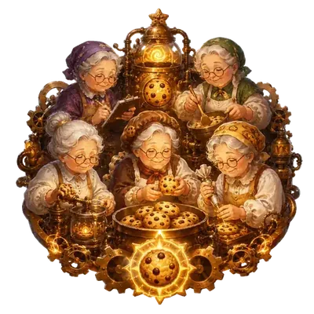 おばあちゃん連携 |
10万 | おばあちゃんの生産 ×6。さらにおばあちゃん1台ごとに強い指・オーブン・工場も少し強くなる | 炉の列 | 無人ライン |
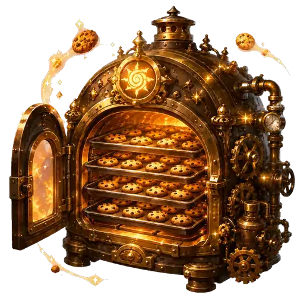 オーブン大量焼成 |
30万 | オーブンの生産アップ。オーブンが多いほど、深い層に届くほど強い | 火種 | 無人ライン |
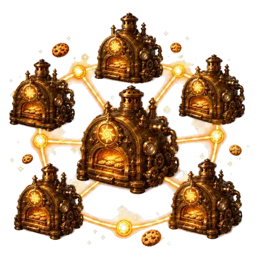 工場ネットワーク |
100万 | 工場の生産アップ。工場と、強い指・おばあちゃん・オーブンが多いほど強い | 無人ライン | まとめ買い |
| 生産火力転換 | 3,000万 | 毎秒生産の値が、そのままモンスターへのダメージに加わる | — | — |
| 香料調合 | 2,000万 | 香料棚の生産アップ。金クッキーを取った直後はさらに大きく上がる | 金色の匂い | 輝き増幅 |
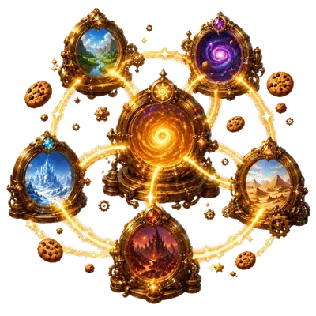 異世界接続網 |
120万 | 異世界炉の生産 ×3。炉が多いほどモンスターが速く出る | 砕ける皮 | 群れ読み |
| 銀行クリック配当 | 400万 | タップの生産アップ。銀行が多いほど、クッキーを貯めるほど強い。銀行からの毎秒収入も始まる | まとめ買い | 経済分析 |
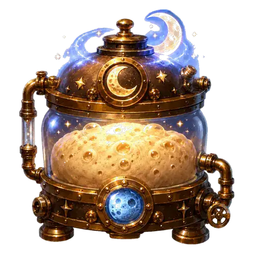 月面発酵 |
4,000万 | 全生産 ×1.8。第3層からは到達層と月面ベーカリーの数でさらに上がる | 時空免許 | 研究解析 |
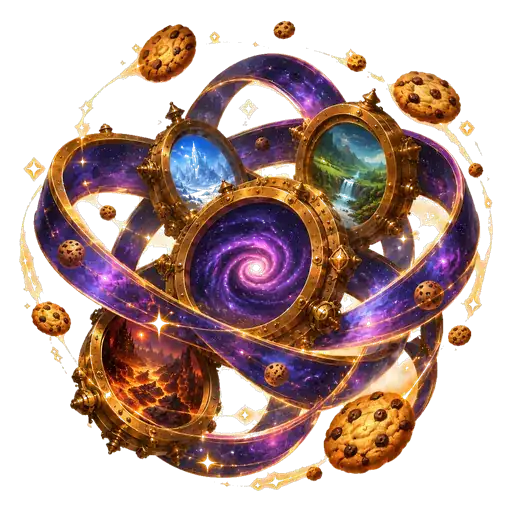 異世界増幅 |
4億 | 全生産アップ。モンスターが出ている間と金ブースト中は特に大きい | 特異点管理 | 超越体 |
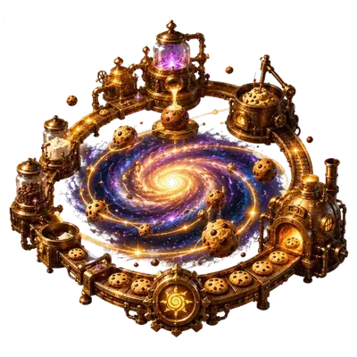 銀河分業 |
60億 | 銀河工場の生産アップ。持っている設備の種類が多いほど強い | 宇宙炉心 | 特異点管理 |
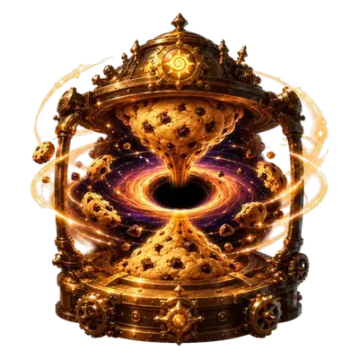 重力圧縮 |
1,600億 | 全生産 ×1.8。次のノルマに必要な量も減る(ブラックホールが多いほど) | 特異点管理 | 量子厨房 |
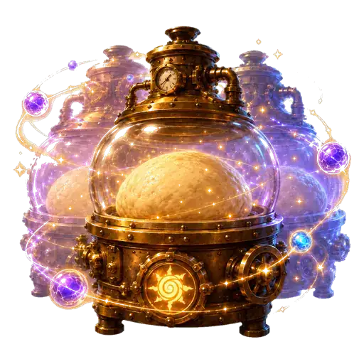 量子発酵 |
3.2兆 | 量子ベーカリーの生産アップ。取得した研究が多いほど強い | 反物質炉 | 超越体 |
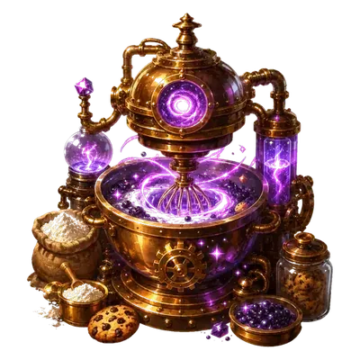 反物質配合 |
64兆 | 全生産アップ。反物質オーブンと、取得したスキルが多いほど強い | 研究解析 | 超越体 |
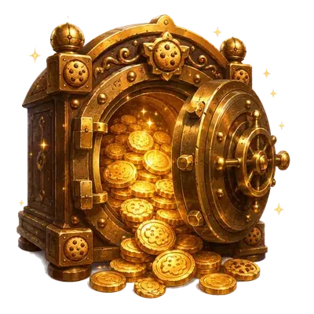 複利金庫 |
800万 | 銀行の生産 ×9。銀行が多いほどさらに上がる | — | — |
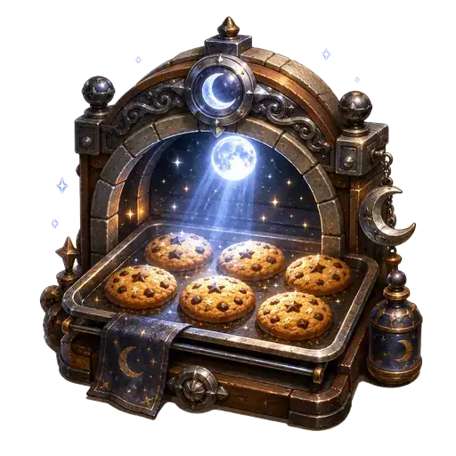 月光焼成 |
8,000万 | 月面ベーカリーの生産 ×9。月面ベーカリーが多いほどさらに上がる | — | — |
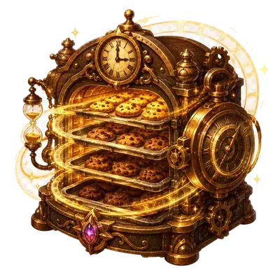 時間差焼成 |
1.5億 | 時空オーブンの生産 ×9。時空オーブンが多いほどさらに上がる | — | — |
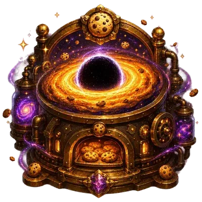 事象縁焼成 |
3,200億 | ブラックホールミキサーの生産 ×9。ミキサーが多いほどさらに上がる | — | — |
| 宇宙対流 | 8,000億 | 宇宙焼成炉の生産 ×9。宇宙焼成炉が多いほどさらに上がる | — | — |
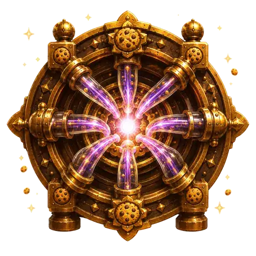 特異点整流 |
1.6兆 | クッキー特異点の生産 ×9。特異点が多いほどさらに上がる | — | — |
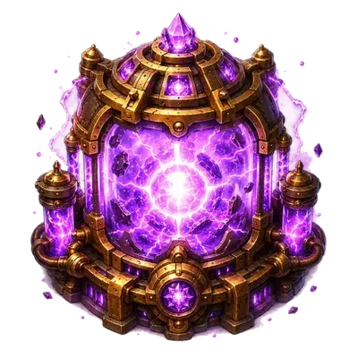 対消滅炉心 |
128兆 | 反物質オーブンの生産 ×9。反物質オーブンが多いほどさらに上がる | — | — |
※ コストは割引を含まない素の値です。スキル「仕入れ」「研究机」「研究改造室」で下がります。
段階研究の中身
段階研究は、転生スキルで購入カードが解放され、そこからクッキーで買うことで有効になります。1つの研究が周回をまたいで育っていく仕組みで、後半の伸びの中心になります。
指先の型
タップに会心が出るようになる。強い指が多いほど、深い層に届くほど会心は出やすく強くなる。
- 段階2：会心を続けるほど会心倍率が上がる(30秒あくとリセット)。屋台も全開になる。
- 段階3：会心のたびに追加でクッキーを獲得する。
おばあちゃん連携
おばあちゃんの生産 ×6。さらにおばあちゃん1台ごとに強い指・オーブン・工場も少し強くなる。
- 段階2：強化の対象に銀行・香料棚が加わる。
- 段階3：深い層に届くほど強化がさらに伸びる。
オーブン大量焼成
オーブンの生産アップ。オーブンが多いほど、深い層に届くほど強い。
- 段階2：オーブン強化 ×1.35。量産品の売上(毎秒収入)が始まる。
- 段階3：オーブンの個別強化Lv 1ごとに +5%。
工場ネットワーク
工場の生産アップ。工場と、強い指・おばあちゃん・オーブンが多いほど強い。
- 段階2：銀行より上の設備は、種類を増やすほど工場が強くなる。
- 段階3：深い層に届くほどさらに上がる。
香料調合
香料棚の生産アップ。金クッキーを取った直後はさらに大きく上がる。
- 段階2：金クッキーを取ると全生産が12秒バースト(金の間隔があくほど強い)。香料の売上も始まる。
- 段階3：深い層に届くほどバーストが強くなる。
異世界接続網
異世界炉の生産 ×3。炉が多いほどモンスターが速く出る。
- 段階2：討伐するたびに40秒の狩り窓。窓の間はモンスターがさらに速く出る。行商も全開になる。
- 段階3：狩り窓の間、モンスターの出現がさらに速くなる。
銀行クリック配当
タップの生産アップ。銀行が多いほど、クッキーを貯めるほど強い。銀行からの毎秒収入も始まる。
- 段階2：所持クッキーに応じた利息を毎秒受け取る(銀行が多いほど多い)。
- 段階3：利息の頭打ちが、深い層に届くほど緩くなる。
月面発酵
全生産 ×1.8。第3層からは到達層と月面ベーカリーの数でさらに上がる。
- 段階2：ノルマに余裕があるほど全生産が上がる。
- 段階3：取得した研究1件ごとに +5%。
異世界増幅
全生産アップ。モンスターが出ている間と金ブースト中は特に大きい。
- 段階2：ノルマ中に討伐するたび全生産 +5.8%(積み重なる)。
- 段階3：深い層に届くほどさらに上がる。
銀河分業
銀河工場の生産アップ。持っている設備の種類が多いほど強い。
- 段階2：設備を均等に揃えるほど全生産が上がる。
- 段階3：深い層に届くほどさらに上がる。
重力圧縮
全生産 ×1.8。次のノルマに必要な量も減る(ブラックホールが多いほど)。
- 段階2：ゲージが満タンで発動でき、240秒間 全生産アップ(周回2回まで)。
- 段階3：発動が周回3回に増え、倍率とノルマ軽減も深い層で強くなる。
量子発酵
量子ベーカリーの生産アップ。取得した研究が多いほど強い。
- 段階2：90秒周期の波で全生産が上下する(研究が多いほど波が大きい)。
- 段階3：深い層に届くほど波が大きくなる。
反物質配合
全生産アップ。反物質オーブンと、取得したスキルが多いほど強い。
- 段階2：深い層に届くほどさらに上がる。
- 段階3：転生するたびに恒久 +3%(周回をまたいで積み上がる)。
研究の3つのタイプ
設備増幅型
「オーブン大量焼成」「複利金庫」「月光焼成」のように、特定の設備の生産を大きく伸ばすタイプです。多くは「その設備の所持台数」が指数で効くため、対象設備の台数が多いほど価値が上がります。台数が少ないうちに買っても効果は限定的です。
全生産型
「月面発酵」「重力圧縮」「異世界増幅」「反物質配合」など、生産全体に倍率がかかるタイプです。どんな構成でも腐らないため、見えたら優先して買って構いません。
仕組みを変える型
「指先の型」（タップに会心が出るようになる）、「生産火力転換」（毎秒生産がそのままモンスターへのダメージになる）、「銀行クリック配当」（毎秒収入が始まる）のように、ゲームの遊び方そのものを変える研究です。数値以上に立ち回りが変わるので、方針に合うものは早めに取る価値があります。
買う順番の考え方
- 全生産型が買えるなら最優先。倍率がそのまま総生産に乗ります。
- 設備増幅型は対象設備をすでに多く持っているかで判断。持っていない設備の増幅研究は後回しで構いません。
- 「重力圧縮」はノルマ未達の寸前に必要量を軽減してくれるため、ノルマ維持を伸ばしたい周回では別格の価値があります。
- スキル「研究解析」を取ると、研究カードに現在の効果・相性・弱点が表示されるようになります。迷いが減るので早めがおすすめです。